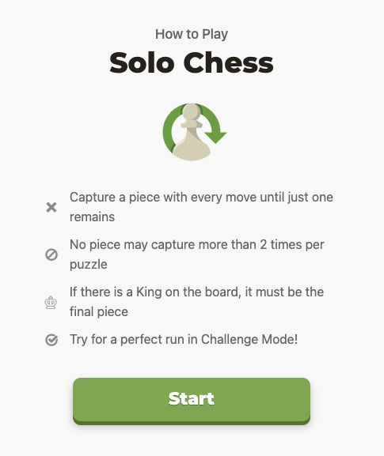
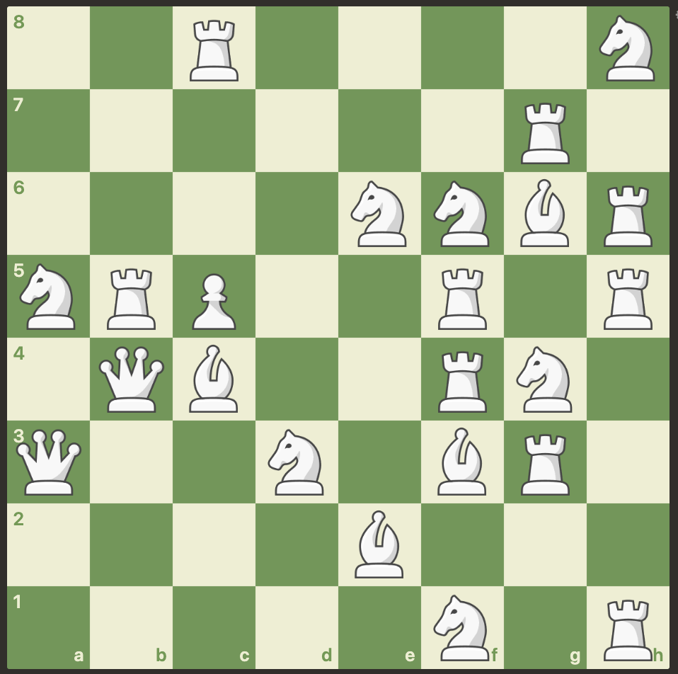
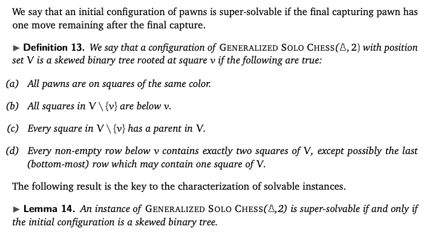
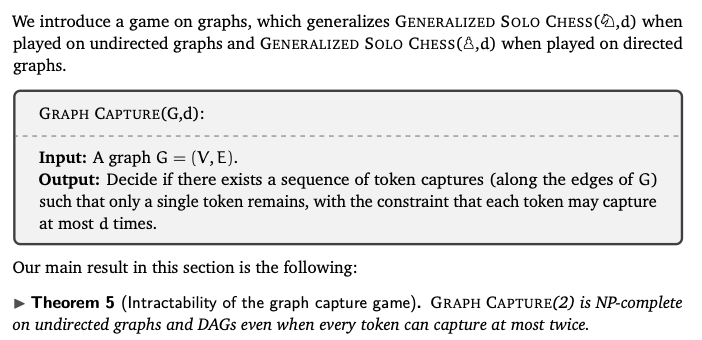
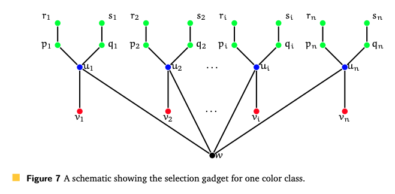
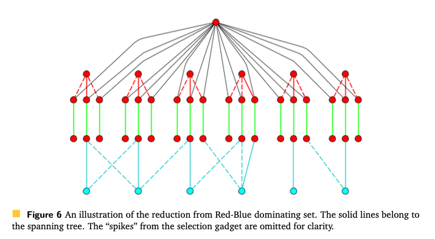
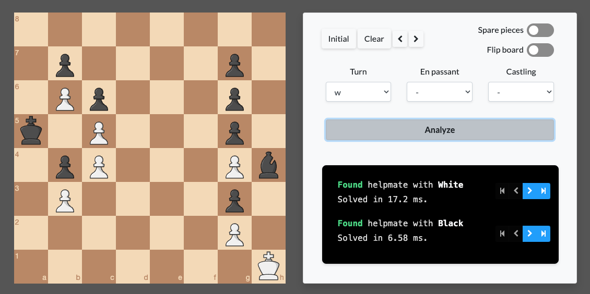

Putting this thread in one place.
🧵 on our latest at FUN 2022 with @NRAravind1 and Harshil.
Have you tried Solo Chess @chesscom yet? It’s addictive — and NP-complete* even when you’re dealing only with rooks!
*when appropriately generalized

So this is a single-player, peg-solitaire-ish chess variant, where you have to clear board by making a sequence of valid captures, albeit starting with unorthodox — and even unrealistic — positions.

To begin with the boards start easy, with a few pieces at a time. Notice, even in the early games, how some positions have just one solution while others may have several.

From initial plays, you sense that it has a very Hamiltonian-Path-ish vibe, and feels like you’re trying to find a path in some graph 😅
We started with a variant that was simultaneously a generalization and specialization:
- n pieces 😎
- ♖’s only
- 1D boards 🙈
This, it turns out, is case so special that its trivial - you can sweep all rooks to the extreme left or extreme right of the board, and any position is winning even if every rook can capture exactly once. Less trivial though: how many ways there are to win? 🤔
We also ask what happens if every rook had a designated number of captures left. Imagine you have a 1D board and three kinds of rooks:
- red rooks cannot move
- blue rooks can move at most once
- green rooks can move at most twice

We show that such 1D boards can be cleared if and only if then number of green rooks is at least the number of red rooks. This ties nicely with the intuition that every immovable rook needs to be picked up by a rook that can help another one (i.e, > one move left).
This generalizes naturally to rooks with a designated number of moves left, where said number can be anything between 0 and d. Since no other chess piece moves sensibly* across a 1D board, we decided to move on 2D boards from here.
- Kings + rooks is an easy exercise.
So if you are still playing with red, blue, and green rooks, then the problem of checking if a given 2D configuration can be cleared up according to solo chess rules turns out to be NP-complete.
No Hamiltonian Path though — this one was from bipartite dominating set 😎


Bishops are much the same as rooks, by a 45-degree tilt of the board.
⚠️ Still open though: what about the case when all pieces have at most two moves left, which is closer to the original spirit of the game?
We don’t know yet, although we’d bet it’s hard, I think.
When playing with queens only, however, we can gadget in the behaviors of red and blue pieces. So we do have that Generalized Solo Chess with just queens that can all move at most twice is NP-complete.
What about pawns? Let’s get clarifying assumptions out of the way:
- white pawns only
- regular captures only since there’s no premise for en passant captures
In solo chess, pawns are (heavily) constrained bishops: they can only move upwards and to a neighboring diagonal square. Knowing that bishops were hard, but pawns felt simple — we didn’t have a bet either way. 🤔
We were pleasantly surprised that the case of pawns is tractable, even when each pawn has a designated* number of moves!
*at most two.

The algorithm is linear time, too.
Next: what about knights? We don’t know yet!
❓ What’s the complexity of solo chess when played only with knights?
Knights are special because we don’t have to worry about obstructions. So the game can be described by a more general token game on graphs:

We do show that Graph Capture is hard by a reduction, again from bipartite dominating set. This might hint at the hardness for Solo Chess played with knights only, but we are not betting on this yet.


I think these preliminary explorations have left us with more questions than answers:
- optimization versions (e.g, clear at least k pieces)
- other constraints (e.g, on distance moved)
- special cases (e.g, O(1) pieces per row/column)
- n x c boards, constant c
While at it, I’m also curious about how @chesscom generates these puzzles, and if they have a mechanism for generating ones that have unique solutions. Also, is it true that if you throw “enough” pieces on the board, it’s solvable WHP?
Shout out to the skak package for making it easy to bring chess pieces to TikZ. We expect to put up a preprint on ArXiV soon. 👀 Meanwhile, we welcome comments and feedback — and if you read this far, thanks very much!
PS. Also if you enjoy chess and algorithms, don’t miss Miguel Ambrona’s amazing Chess Unwinnability Analyzer, which also appears at FUN 2022!

You can find the full list of accepted papers here.